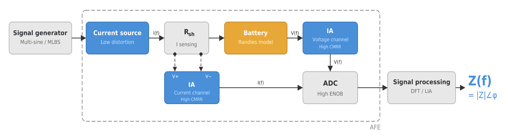
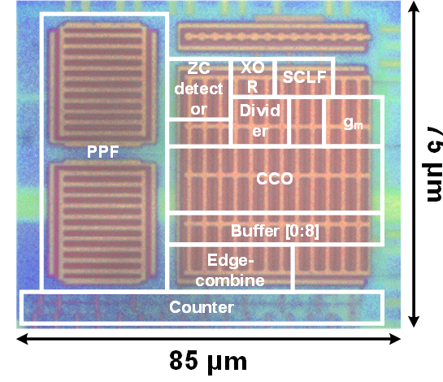

Every sensing system eventually meets the same bottleneck — the interface circuit that turns a physical quantity into a number. We work on that interface, across three application domains that share one toolbox of precision techniques.
Battery EIS Analog Front-Ends
Electrochemical impedance spectroscopy reveals the internal state of a battery, but measuring it on-board demands milli-hertz stability, differential sensing across a high common-mode stack voltage, and sub-milliwatt power. We study drift compensation, excitation-signal synthesis, and the architectures that make integrated EIS practical for battery management systems.

Resistive Sensor Readout
Resistor-to-digital converters translate a sensing element directly into digital code. By merging the sensor bias network with the first integrator of a continuous-time delta-sigma loop, we pursue high resolution at low energy per conversion — demonstrated on MEMS gas sensors resolving BTEX compounds down to sub-ppb levels.

Precision Temperature Sensing
Frequency-locked-loop resistor-based sensors deliver millikelvin resolution in a few thousand square micrometres, making them well suited to thermal monitoring inside processors and DRAM. Our interest lies in the accuracy limits that remain after a single-point trim, and in energy-efficient frequency-to-digital conversion.
